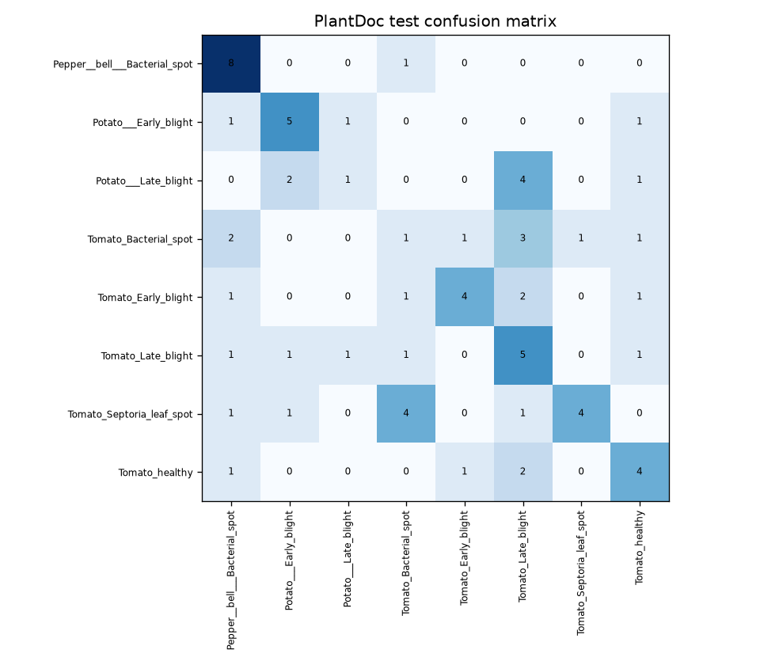

Dashboard Overview
Checking backend...
Checking model...
Model Version
—Confidence Threshold
—MLflow Registry
—Disease Diagnosis
AI-powered plant leaf disease classification.
Model Analytics
Evaluation metrics and confusion matrix.
Drift Detection
Monitor changes in incoming image data.
Pipeline Automation
Airflow workflow and model retraining paths.
Upload a plant leaf image to get a prediction from the deployed MobileNetV2 model.
Choose a plant leaf image
—
Validation
91.75%Test
71.23%Validation
2.27%Test
9.72%| Metric | Validation | Test |
|---|---|---|
| Accuracy | 88.38% | 44.44% |
| Mean Confidence | 91.75% | 71.23% |
| Macro F1 | 87.07% | 42.86% |
| Confident Wrong Rate | 2.27% | 9.72% |
Source: reports/metrics.json. The difference between validation and test performance warrants further investigation.
Validation vs test dataset comparison
Green: Validation | Orange: Test. Source: reports/metrics.json.
Comparison of actual and predicted disease classes.

⚠ Data Drift Detected
Distribution changes detected across all four monitored image features.
Kolmogorov-Smirnov test statistics from reports/drift.json.
All four features have p-values below 0.05, indicating statistically significant differences between reference and incoming distributions.
Blue Mean has the highest KS statistic (0.3972), indicating the largest measured distribution difference among these features.
Reference dataset
400 samplesIncoming dataset
72 samplesReport status
Drift detectedSource: reports/drift.json. These are recorded report results, not live streaming measurements. Drift detection does not by itself establish model accuracy degradation.
AgroScan ML Pipeline
Automated data validation, model execution, monitoring and conditional retraining.
Configured task sequence and dependencies from the Airflow DAG.
| DAG ID | agroscan_pipeline |
|---|---|
| Schedule | @weekly |
| Maximum Active Runs | 1 |
| Catchup | Disabled |
| Retries | 1 |
| Retry Delay | 5 minutes |
| Tags | agroscan, mlops |
Source: airflow/dags/agroscan_pipeline.py. This diagram represents configured dependencies, not a live Airflow execution. Both branches converge on the final done task.
agroscan-mobilenetv2
Plant disease classification model
Model Name
—Model File
—Model Version
—Waiting for API...
Serving Framework
FastAPIModel Framework
TensorFlow / KerasClasses returned by the model readiness endpoint.
Model metadata is retrieved from the live FastAPI /ready endpoint. MLflow version information is provided by the API configuration.